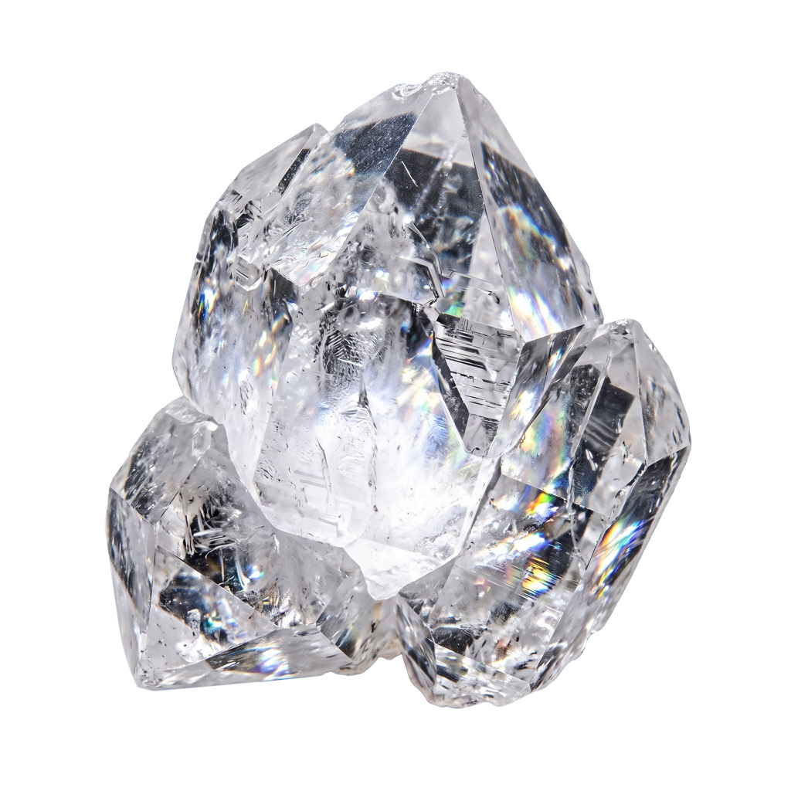
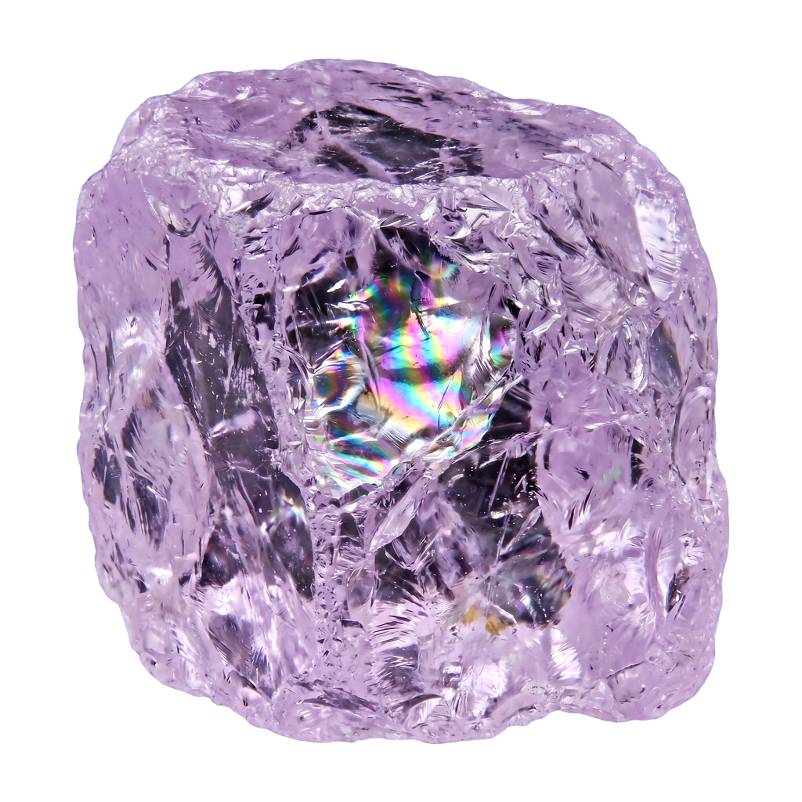
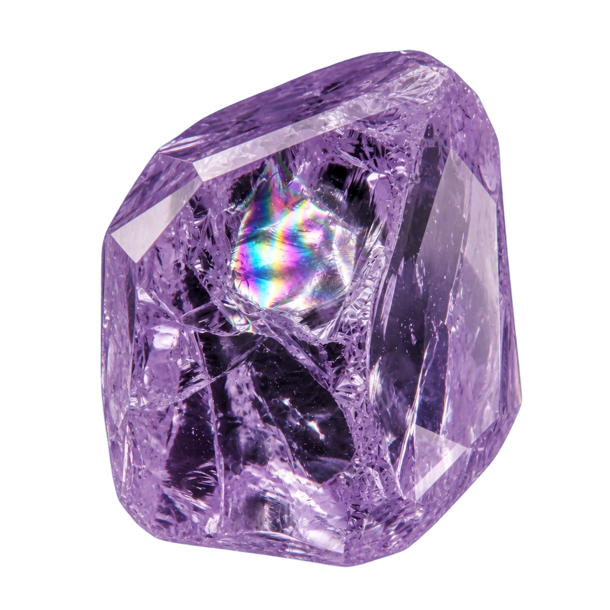
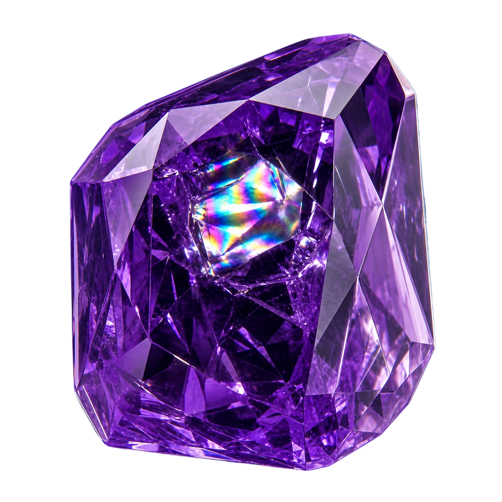

Stratum brings structure, security, and long-term stewardship to the systems your business depends on every day.
Every service, every engagement, every decision is filtered through the same lens.




Stratum operates as an operational technology partner — not just another IT company.
Ongoing support, maintenance, monitoring, and oversight of the systems your business depends on every day.
Layered protection, stronger recovery readiness, and clearer control across users, endpoints, backups, and access.
ERP, CRM, automation, and AI enablement that aligns your systems with how the business actually operates.